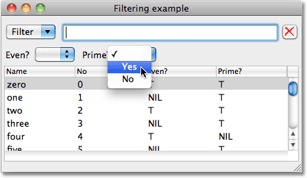

Boolean Filters Layout
CAPIには、list-panelにテキストフィルターを追加するfiltering-layoutがあります。このプロジェクトでは、 multi-column-list-panelを使ってfiltering-layoutを作る方法を紹介します。論理値フィルターを追加し、特定の列(column)の論理値をもとに、アイテムを並べかえるフィルターを追加します。

定義
この例は、capi:define-interfaceを使うと簡単に実装できますが、filtering-layoutについて明確にするために、遠回りをして説明をします。まず、今回のwindowのクラス定義です。アイテム、テキストフィルター、論理値フィルター、リストパネルに対応するスロットがあります。
(defclass items-window (capi:interface) ((things :initarg :things :reader things) (filter :initarg :filter :reader filter) (booleans :initarg :booleans :reader booleans) (list-panel :initarg :list-panel :reader list-panel)))
アイテムのウィンドウを作る
アイテムのwindowは、make-items-window関数によって描写されます。
それぞれのアイテムは 値のリストで、 *columns*によって特定されると仮定します。
(defparameter *columns* '("Name" "No" "Even?" "Prime?"))
論理値を含む列(column)は、*boolean-columns*によって特定されます。
(defparameter *boolean-columns* '("Even?" "Prime?"))
では、アイテムのwindowを作る関数を見ていきましょう。
(defun make-items-window (things) (let* ((list-panel (make-instance 'capi:multi-column-list-panel :items things :external-min-height 140 :columns (map 'list #'(lambda (column) (list :title column :width 100)) *columns*))) (filter (make-instance 'capi:filtering-layout :change-callback 'update-items-window)) (booleans (map 'list #'(lambda (column) (make-instance 'capi:option-pane :title column :items '("" "Yes" "No")
:external-max-width 64 :callback-type :interface
:selection-callback #'update-items-window))
*boolean-columns*))
(booleans-row
(make-instance 'capi:row-layout :description booleans))
(layout
(make-instance 'capi:column-layout
:description (list filter booleans-row list-panel)))
(window
(make-instance 'items-window :title "Filtering example" :best-width 480 :things things
:list-panel list-panel :filter filter :booleans booleans :layout layout)))
(capi:display window)))
それぞれの列は*boolean-columns*で特定され、空欄YesNoのオプションがあるポップアップメニューが作られます。

text-input-paneフィルターに文字を打ち込むか、ポップアップメニューに何か変更を加えると、update-items-windowが呼び出されます。この関数は、リストパネルのcollectionアイテムを再計算して、フィルターの新しい値を反映します:
(defun update-items-window (window)
(let* ((things (things window))
(options (map 'list #'capi:choice-selection (booleans window)))
(positions (map 'list #'(lambda (boolean)
(position (capi:titled-object-title boolean) *columns* :test #'equalp))
(booleans window)))
(filtered-things
(multiple-value-bind (regexp excludep)
(capi:filtering-layout-match-object-and-exclude-p (filter window) nil)
(remove-if-not
#'(lambda (item)
(and
(if regexp (find-regexp-in-string regexp (first item)) t)
(every #'(lambda (option position)
(or (zerop option)
(eq (not (= 1 option)) (not (nth position item)))))
options positions)))
things))))
(setf (capi:collection-items
(list-panel window)) filtered-things)))
items-windowで表示されるデータのリストを生成するルーチンを確認しましょう:
(defun prime? (n)
(let ((test 2))
(loop
(when (> (* test test) n) (return t))
(when (zerop (rem n test)) (return nil))
(incf test))))
この関数は、0から999までの整数の1000のentriesのリストを生成します:
(setq *things*
(let (things)
(dotimes (x 1000 (reverse things))
(push
(list (format nil "~r" x) x (evenp x) (prime? x))
things))))
最後に、次のように、items-windowを表示しましょう:
(make-items-window *things*)
blog comments powered by Disqus